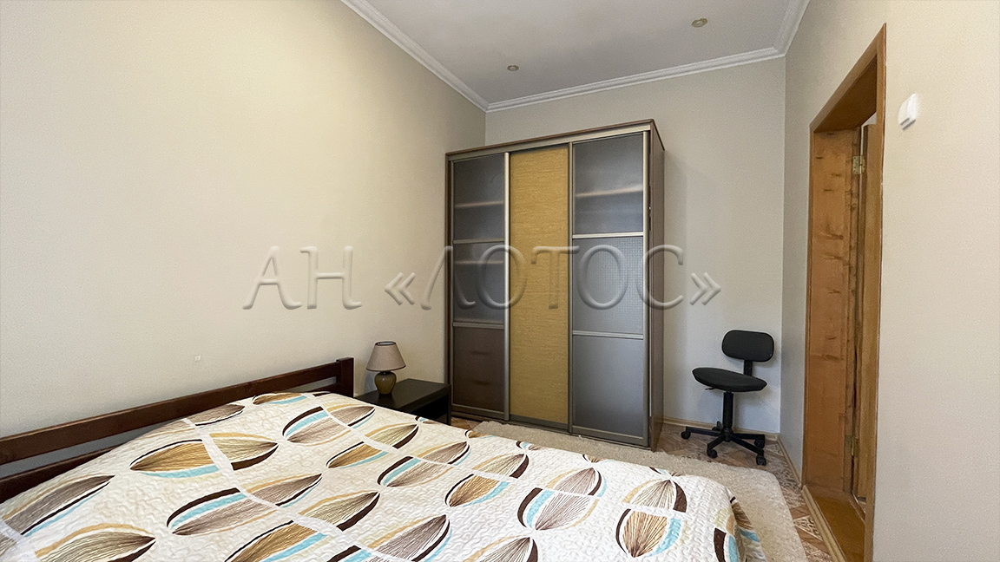
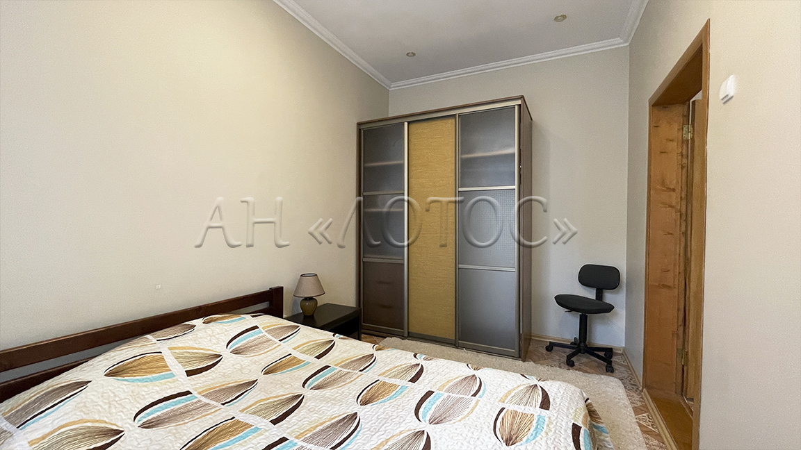

2-комнатная квартира в центре Николаева
Ул. Мариупольская, 13 — 52 м², 1 этаж, сталинка
 



Описание
- Общая площадь: 52 м²
- Жилая площадь: 28 м²
- Кухня: 7 м²
- Комнат: 2 (гостиная и спальня)
- Этаж: 1 из 4
- Тип дома: кирпичный (сталинка), ж/б перекрытия
- Высота потолков: 3 метра
- Состояние: квартира с ремонтом, меблирована
- Тихий зелёный двор, закрытая территория
- 50 метров до ул. Соборной
- Идеально для жизни или аренды
Расположение
Квартира находится в самом сердце Николаева. До ул. Соборной — 3 минуты пешком. Улица тихая, зелёная, с удобной парковкой. Рядом школы, магазины, остановки.